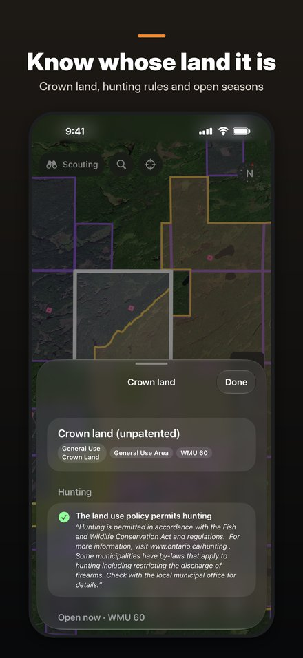
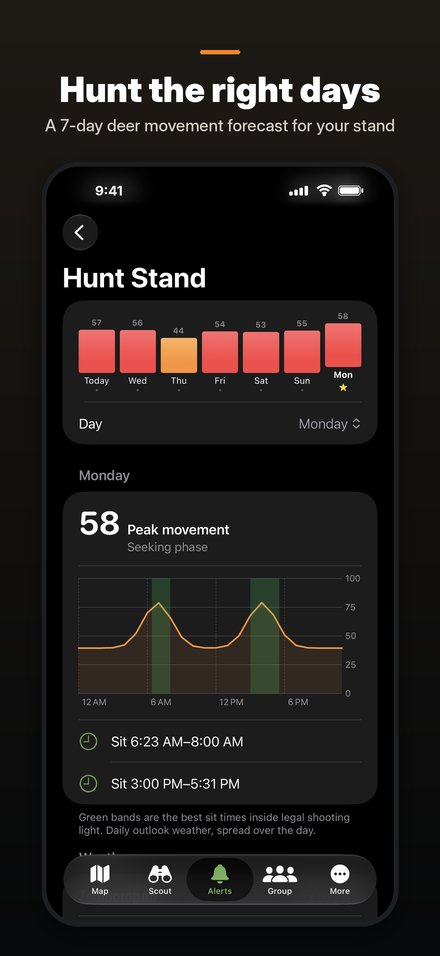
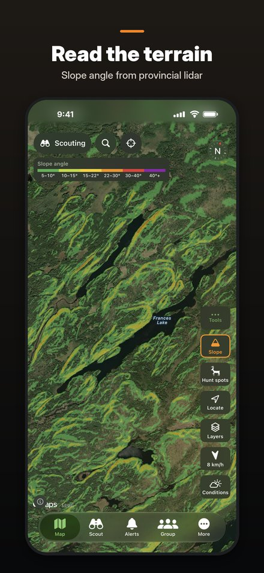

Deer and moose hunting maps for Ontario, for iPhone
Rutcast puts the land, the wind and your hunting party in one place, so you can pick a spot, set up on the right wind and know where everyone is.



Know the ground
Wildlife Management Unit boundaries and search
Crown land, parks and private land, with the open seasons for that WMU
Hunt Spots: where public roads and trails meet huntable Crown land
Slope angle, topographic maps and satellite imagery
Play the wind and the rut
Wind relative to the way you are facing, with your scent cone on the map
A 7-day deer or moose movement forecast for any stand you watch
Season phase from pre-rut to late season, and legal shooting light
Hunt as a group
See your party's positions and facing direction live on the map
Share stands, blinds, parking and drive points
Sharing stops on its own after the time you choose
Private by design
No account, no ads, no analytics. Your waypoints, tracks and journal stay on your iPhone. Hunt Groups use your own iCloud account and share only with the people you invite.
Rutcast is not a source of hunting law. Always check the current Ontario hunting regulations before you hunt.